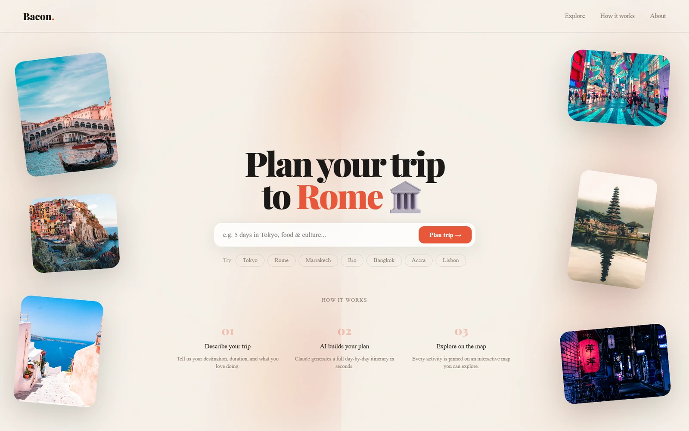
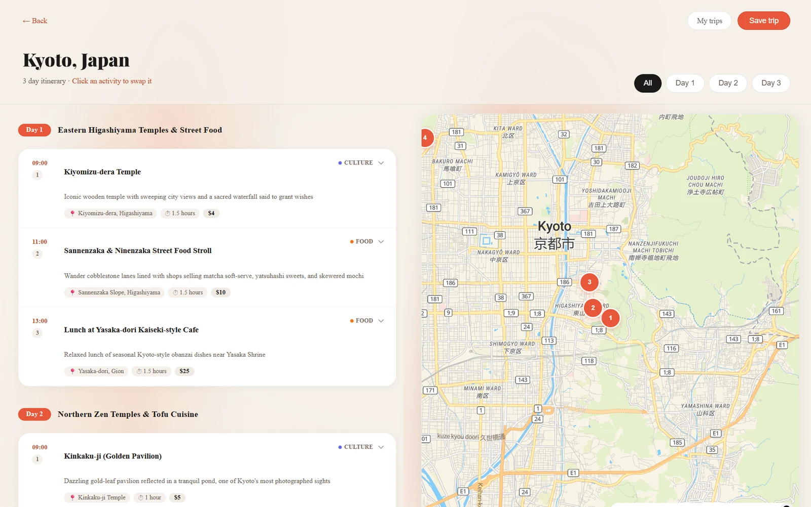
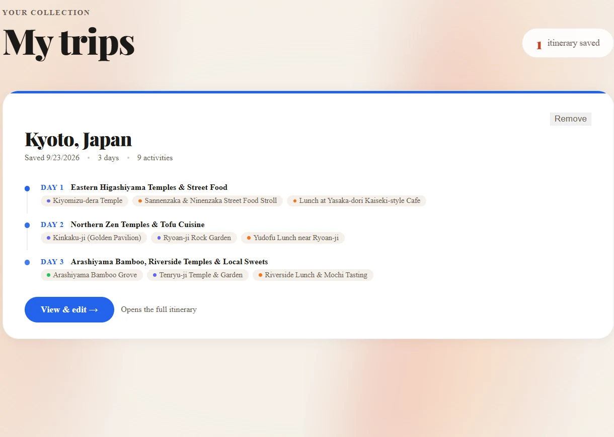

The idea
Most trip planners hand you either a wall of text or a map full of pins with no sense of order. BaconAI puts both side by side: an itinerary split into days, each with timed stops and a theme, and a map whose numbered pins follow the same sequence.
The build was heavily AI-assisted, and I'm not claiming otherwise. What was mine was the direction: what the product should feel like, what was wrong with each version, and what to change next.
Finding a visual direction
From generic dark to warm editorial
The first version was a dark hero with white text, the default look of a hundred AI demos. I wanted something minimal with personality, compared a few colour and layout directions, and chose a warm magazine style: cream paper, charcoal text, one coral accent, a heavy Playfair Display for headlines and DM Sans for reading.
- Cream
- Charcoal
- Coral
Less advertising, more use of space
The first landing page read like a sales page, with too many selling points competing. I stripped it back so the empty space did some work: one search field that accepts a plain sentence, quick-pick destinations so nobody faces a blank box, and a three-step explanation underneath.

Three rounds on the trip page
Most of the design time went into the results page. Each round started with me using it and writing down what felt wrong.
- Round one: nothing harsh, nothing crampedMy notes were that the buttons were too small, the sharp corners felt hostile, and the map looked "awkward just on the side". Buttons got bigger hit areas, corners got a consistent radius, and the map got real width.
- Round two: let the map answer a questionI made each itinerary card clickable so the map would open on that stop, with a way to close it if it took too much room, and asked for alternatives based on what the traveller likes.
- Round three: I reversed my own decisionOpening the map per card turned out worse, because you lost the overview of the day. So every stop is now plotted from the start, day filters narrow the map when you want to focus, and opening a stop offers three nearby alternatives, each with a "Use this instead" button that swaps it into that slot.
- Answer the questions people actually haveEvery stop shows the address, how long to allow, and whether it's free or roughly what it costs. Opening one adds an insider tip, and alternatives carry the same details so you're comparing like with like.


Plans that work on the ground
A route, not a scatter
An itinerary that zigzags across a city looks fine as a list and falls apart on a map. The planner clusters each day by neighbourhood, respects opening hours and meal times, leaves travel time between stops, and keeps a comfortable pace. Alternatives follow the same rules.
Keeping plans
Trips can be saved and reopened from a "My trips" page, which shows each day's theme and stops as a compact timeline, so you can see what you planned without opening the map view.

Constraints
Cost shaped the product
I switched mapping from Mapbox to MapTiler for its free tier. The AI started on OpenAI, moved to Groq's free models with a fallback across three of them, and now runs on Claude after those models were retired. Knowing what a platform will actually cost, and letting that reshape the experience, is part of the design job.
An interaction that felt wrong
Highlighting a stop made the map stutter, because every change redrew it. Updating the map directly instead of re-rendering it made selection feel instant. An engineering fix, but I only found it because the interaction felt off.
Stack
- Next.js
- TypeScript
- Tailwind
- shadcn/ui
- Framer Motion
- MapLibre and MapTiler
- Claude API